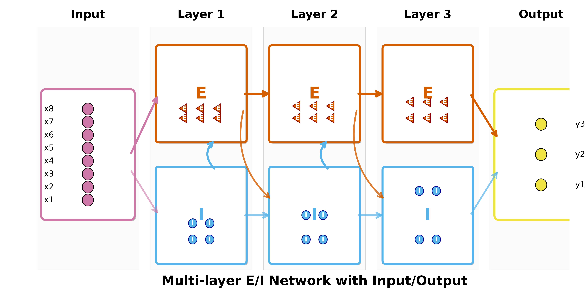

Theory and Background
This section covers the theoretical foundations and biological principles underlying the Dendritic Modeling Framework.
Biological Foundations
Dendritic Computation
Neurons are not simple point processors. Their dendritic trees perform sophisticated local computations before signals reach the soma:

Key principles:
Spatial segregation: Different dendritic branches can process different input streams independently
Local nonlinearities: Dendritic branches implement nonlinear operations through voltage-gated channels
Compartmentalization: Electrical and biochemical isolation allows for localized processing
Shunting Inhibition
The core computational principle in our framework is shunting inhibition, a divisive form of inhibition ubiquitous in biological neural circuits:

Where: - \(E\) is the excitatory input - \(I\) is the inhibitory input - \(\epsilon\) is a small constant preventing division by zero
This provides several computational advantages: - Gain control: Automatic adjustment of neural sensitivity - Normalization: Inputs are normalized by total activity - Stability: Prevents runaway excitation
Excitation-Inhibition Balance
Following Dale’s principle, neurons in biological networks are either excitatory or inhibitory, but not both:


Network organization: - Separate excitatory (E) and inhibitory (I) populations - E→E connections propagate signals between layers - E→I connections recruit inhibition - I→E connections provide feedback inhibition within layers - I→I connections between layers
Mathematical Framework
Dendritic Integration
Each dendritic branch \(d_i\) performs the following computation:
This creates a sequential processing chain from distal to proximal dendrites:
Network Dynamics
The full network dynamics for layer \(\ell\) are described by:
Where \(f_{dendrite}\) implements the sequential dendritic computation with shunting inhibition.
Sparse Connectivity
Biological networks are sparsely connected. We implement several strategies:

Dense Connectivity: Traditional fully-connected layers
TopK Sparse: Each neuron connects to exactly K others
DEEPST Dynamic: Adaptive rewiring based on importance
Implementation Details
Computational Efficiency
Despite biological complexity, our implementation is computationally efficient:
Sparse matrix operations for connectivity
Vectorized dendritic computations
GPU-accelerated forward/backward passes
Memory-efficient gradient computation
Stability Considerations
To ensure stable training:
Voltage stabilization: Pre-training phase to establish proper voltage ranges
Gradient scaling: Adaptive normalization for dendritic gradients
Weight initialization: Specialized initialization for E/I balance
Homeostatic regularization: Maintains healthy activity levels
Key Advantages
The dendritic modeling framework offers several advantages over traditional neural networks:
- Biological Plausibility
Respects Dale’s principle (separate E/I populations)
Implements realistic synaptic dynamics
Models dendritic computation
- Computational Benefits
Natural normalization through shunting inhibition
Improved gradient flow through dendrites
Sparse connectivity for efficiency
- Robustness
Inherent stability from divisive normalization
Better noise tolerance
Reduced need for explicit regularization
References
Key papers underlying this framework:
Shunting inhibition: Carandini & Heeger (2012) “Normalization as a canonical neural computation”
Dendritic computation: Stuart & Spruston (2015) “Dendritic integration: 60 years of progress”
E/I balance: Denève & Machens (2016) “Efficient codes and balanced networks”
Sparse connectivity: Litwin-Kumar & Doiron (2014) “Formation and maintenance of neuronal assemblies”
For implementation details, see the API Reference.